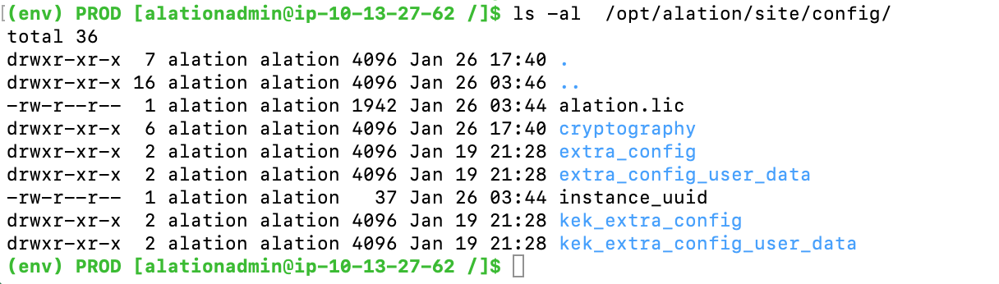

Update Alation to 2020.4¶
Customer Managed Applies to customer-managed instances of Alation
It is recommended to update to the latest available patch version of a release.
Note
If you are updating from 2020.4.x to a newer patch version of 2020.4, jump to Update Alation from 2020.4.x to a Newer Patch Version of 2020.4.x.
Update Dependencies¶
Update path to 2020.4.x depends on your current release number and the current OS of your Alation host server:
Host OS Version Dependency¶
Instances where the Alation host server runs on the following older OS versions will not be able to upgrade to 2020.4.x:
CentOS 6.x (reached EOL)
RHEL 6.x (reached EOL)
Ubuntu 12 and 14 (reached EOL for standard or all support).
If this is the current OS of your Alation server host, please consider the following recommendations:
The update path in this case will be to upgrade the operational system of the host to a supported version and then update Alation to 2020.4.
The supported versions of these operating systems are:
CentOS 7.x and 8.x
RHEL 7.x and 8.x
Ubuntu 16, 18.
Note
Reason for Changes in OS Support
Multiple components of the Alation application have been upgraded to newer versions to allow for better security, performance, and reliability. Some of these newer components are incompatible with older OS versions that have reached the end of most forms of vendor support and maintenance.
Alation Version Dependency¶
Alation instances on versions V R7 (5.12.x) and 2020.3.x can be directly updated to version 2020.4 if the host OS version requirements are met;
Direct update to 2020.4 from versions V R6 (5.10.x) and older is not supported as version 2020.4 requires the migration between Elasticsearch versions 1 and 7 to be complete. Alation instances on V R6 and below have to be updated in 2 steps:
STEP 1: update to 2020.3 and allow for the Elasticsearch migration to complete
STEP 2: update from 2020.3 to 2020.4 if the host OS requirements are met.
Update Schedule¶
Downtime Schedule¶
There is an additional step in the upgrade process for 2020.4 that has an impact on the time to upgrade. It is required to start with a pre-upgrade reindexing script provided by Alation before running the update executable. The script ensures the forward and backward compatibility of Alation components before and after the update. Re-indexing will happen one more time automatically during the 2020.4 update process.
The steps to run the script are included into the update steps described below.
Important
The script should only be run after all other 2020.4 update prerequisites have been fulfilled, such as PostgreSQL upgrade to 9.6 and Elasticsearch migration to 7.4. Please follow the sequence of steps given in the 2020.4 update instructions.
The run time of the manual reindexing script varies depending on the size of the internal application database on your instance. The time required for the pre-upgrade script to run is approximately equal to the time that will be taken by the second reindexing that will happen automatically during upgrade.
Please allocate additional time in your Alation upgrade schedule to accommodate for this requirement.
The script execution will stop all Alation services except Postgres. Please plan for the Alation downtime during this time.
Update on HA Pair¶
Please be advised that the update instructions for HA Pair configuration have changed for 2020.4. When you update the HA Pair instances to 2020.4 GA, you will need to perform an additional step before and during the upgrade that are specific to the HA Pair configuration. These steps are included into the update instructions for upgrade on HA Pair.
2020.4 Release-Specific Information¶
Chroot Upgrade to CentOS 8¶
In 2020.4, the Alation Chroot was upgraded to CentOS 8.2.
Note
Chroot upgrade to CentOS 8 includes the upgrade of the Glibc library that changes the ordering of PostgreSQL queries for text data. Because of the difference in the ordering from the previous CentOS version, the indices created in previous versions are no longer valid for the 2020.4 release. This dictates the requirement to rebuild PostgreSQL indices involving any text data type to ensure compatibility of the changes between releases. The reindexing is included into the update steps described below.
Changes to Supported OS for the Alation Host Server¶
From 2020.4, the OS requirements for the Alation host server have changed.
No longer supported for new installations and upgrade:
CentOS 6.x
RHEL 6.x
Ubuntu 12 and 14.
Newer versions of these OS supported from 2020.4:
CentOS 8.x
RHEL 8.x
Ubuntu 18.
Note
AWS Linux 2 as the host OS is supported: there are no changes in respect to AWS Linux 2 support.
If your Alation host runs on an older OS version which is not supported for update to 2020.4, please consider the option to upgrade the host to a newer supported OS version.
Updated Data Source Drivers¶
In 2020.4, a number of native (built-in) connectors were updated with newer driver versions to keep up with the driver bug fixes and improved functionality. During the update to 2020.4, data sources which use built-in drivers will be automatically switched to the newer driver versions:
Databricks: added Simba JDBC driver for Databricks 2.6.16:
AWS Databricks: the new driver is auto-switched during update. The URI is auto-updated to conform to the required format;
Azure Databricks using Custom DB: no changes to the selected driver during update.
SQLServer: added Microsoft JDBC driver for SQLServer version 8.2.2:
SQLServer sources using older built-in driver versions 6.2 or 7.4.1 are auto-switched to the newer driver version 8.2.2;
SQL sources using the NTLM authentication and the built-in jTDS driver are NOT switched over to the new driver during the update. It is recommended to manually change the jTDS driver to 8.2.2 and the URI after updating to 2020.4.
MySQL: added JDBC driver for MySQL version 8.0.21:
no changes to URI. Driver is auto-switched during the update.
Google BigQuery: changed JDBC driver for Google BigQuery to driver version 1.2.11.1014:
no changes to URI. Driver is auto-switched during the update.
Snowflake: changed JDBC driver for Snowflake to driver version 3.12.9:
no changes to URI. Driver is auto-switched during the update.
PostgreSQL: changed JDBC driver for PostgreSQL to driver version 42.2.14:
no changes to URI. Driver is auto-switched during the update.
Alation Analytics V2 Update¶
This only applies to instances where Alation Analytics V2 is enabled and installed. Release 2020.4 includes an updated version of Alation Analytics V2. Update of the Alation Analytics V2 component follows a separate update flow and should be updated separately from the Alation Catalog after the Catalog is updated to 2020.4.
Note
It is recommended to update Alation Analytics V2 right after updating Alation so that it uses the compatible version and functions correctly. All ETL jobs will be paused until Alation Analytics V2 is upgraded. For steps, please refer to Update Alation Analytics V2.
Update Alation to 2020.4¶
2020.4 Update Prerequisites¶
PostgreSQL Upgrade to 9.6. Required¶
Before updating Alation to 2020.4, it is required that the internal PostgreSQL database (Rosemeta) should be updated to version 9.6. Update to 2020.4 will fail with the corresponding error message if the internal PostgreSQL is still on version 9.3.
Internal PostgreSQL upgrade steps: Upgrade Internal PostgreSQL Instances from 9.3 to 9.6.
Removal of Elasticsearch 1.4.¶
In 2020.4, Alation no longer contains the Elasticsearch 1.4 component.
Elasticsearch 1.4 removal does not affect versions V R7 (5.12.x) and 2020.3.x as on these versions the Elasticsearch migration from the older to the newer version is expected to be complete.
However, versions V R6 (5.10.x) and older have to first be updated to 2020.3, allow time for the Elasticsearch migration to complete, and then be updated to 2020.4.
Migration from Elasticsearch version 1.4. to 7.4 may take about a week’s time on large instances. Please be prepared to allow for at least a week’s long wait period after updating to 2020.3.
Note
Elasticsearch upgrade from version 1.4 to version 7.4 was introduced in release V R7 (5.12.x). Both Elasticsearch versions still coexist in Alation versions V R7 and 2020.3. The search index migration between the older and newer Elasticsearch versions happens in the background when Alation was updated to V R7 or 2020.3 from an older release. As a result of the Elasticsearch migration, Alation search was switched over to use Elasticsearch version 7.4, while version 1.4 was still present in an idle state. In 2020.4, Elasticsearch version 1.4 has been removed and is no longer present on the Alation server.
2020.4 Update Steps¶
V R7 (5.12.x) and 2020.3.x to 2020.4.x¶
Make sure you have a recent and valid Alation backup or a system image. Do not attempt the steps below unless you have taken a backup.
Important Update Safety Best Practice
SSH to the Alation host to be updated.
Important
In case of HA Pair configuration, SSH to the Primary server first. The 2020.4 pre-upgrade script must be added to and run on the Primary server. Note that the script stops Alation services.
Add the pre-upgrade reindexing script to the Alation server: copy the script Pre-Update Reindexing Script for 2020.4 to the Alation host and save it to /opt/alation/alation/opt/alation/ (path outside the Alation shell) as preupgrade_reindexing.py.
Is it recommended to run the script in a Screen session. Start a Screen session:
screen -S reindex_db
Enter the Alation shell:
sudo /etc/init.d/alation shell
Check the PostgreSQL version:
alation_psql
Note
Upgrade to 9.6 is required if Postgres is still on version 9.3. Update to 2020.4 will fail if Postgres is still using version 9.3. Internal PostgreSQL upgrade steps: Upgrade Internal PostgreSQL Instances from 9.3 to 9.6.
Check the Elasticsearch mode. It should be set to 2. If you see a different value, you will not be able to upgrade as Elasticsearch migration may not have happened. In this case, contact Alation Support to assist with the update.
alation_conf elasticsearch.backend_modeCheck permissions on the folder extra_config at /opt/alation/site/config/extra_config. The permissions should be set to 755.
ls -al /opt/alation/site/config/
Example output:
If you see other permissions on extra_config, change to 755:
sudo chmod 755 /opt/alation/site/config/extra_config
Still in the Alation shell, change user to
alation:sudo su alation
Update the permissions on the preupgrade_reindexing.py script so that it can be executed by user
alation.Important
The preupgrade_reindexing.py script does not exist on the Alation server by default. The script file must have been added manually as described in Step 3 of this instruction. Make sure you have created the file with the script and have added it to the required path.
cd /opt/alation/ sudo chown alation:alation preupgrade_reindexing.py chmod 755 preupgrade_reindexing.py
Run the script with the command given below. This script stops all Alation services except Postgres. Do not start any of the services while the script is running as this can result in an inconsistent state of the data.
python preupgrade_reindexing.pyNote
The time required for reindexing to complete depends on the size of the internal database. The Alation update time will be increased by approximately this amount of time when the second reindexing runs automatically during the update. The second reindexing does not require manual steps.
The script prints its output to the console and to /opt/alation/site/site_data/pre_upgrade_reindex_rosemeta_db.log.
Example output for a successful completion of the script run time:
Completed the Pre-upgrade REINDEX of Rosemeta DB successfully. start: "Sat Nov 14 06:45:53 2020", end: "Sat Nov 14 06:46:59 2020", duration: "0:01:06.034741" Total number of tables reindexed: 736
Example output for a failed execution:
Completed the attempt to REINDEX Rosemeta DB. Failed to REINDEX the following tables: <…>.
Warning
In case the script execution fails, do not proceed with the update. Contact Alation Support to troubleshoot and assist with the next steps.
When the script execution completes successfully, Alation recommends to take a new backup with the reindexed data.
Proceed to update the Alation application using the appropriate update instructions:
Alation recommends to update the HA Pair to 2020.4 with splitting the HA cluster: Update HA Pair with Cluster Splitting
Perform the post-upgrade steps if they are relevant to your Alation instance. See Post-Upgrade Steps 2020.4.
{kind=link}
V R6 (5.10.x) and Older Releases to 2020.4¶
Step 1: Update Alation to 2020.3¶
Familiarize yourself with 2020.3 release-specific information.
Follow 2020.3 update instructions for updating your specific version to 2020.3.
Perform post-upgrade steps for 2020.3 if they are relevant to your Alation instance.
Refer to: Update Alation to 2020.3.
Step 2: PostgreSQL Upgrade to 9.6¶
Upgrade the internal PostgreSQL if it is still on version 9.3. Internal PostgreSQL upgrade steps: Upgrade Internal PostgreSQL Instances from 9.3 to 9.6.
Step 3: Allow Time for Elasticsearch Migration¶
Allow for about a week on release 2020.3 for Elasticsearch migration to complete.
Note
It is possible to force the migration if this wait period is not an option. Please contact Alation Support to assist in forcing Elasticsearch migration.
Step 4: Update Alation from 2020.3 to 2020.4¶
Refer to V R7 (5.12.x) and 2020.3.x to 2020.4.x for the update steps.
Important
There is an important pre-upgrade step that must be performed before updating to 2020.4. Alation provides a pre-upgrade reindexing script that must be run before starting the update process. The steps to run the script are included into the update instructions.
Step 5: Perform the Post-Upgrade Steps in 2020.4¶
See Post-Upgrade Steps 2020.4 below.
Post-Upgrade Steps 2020.4¶
Update Alation Analytics V2 if it is enabled and installed with your instance: Update Alation Analytics V2.
If you have SQL Server data sources that use NTLM authentication and the built-in jTDS driver, consider switching them to the SQL Server driver version 8.2.2 added in 2020.4.
If you have Azure Databricks sources using Custom DB and a custom driver, consider switching to the new Simba JDBC driver 2.6.16 that is now available in the list of drivers on the General Settings tab of the data source Settings page.
Update Alation from 2020.4.x to a Newer Patch Version of 2020.4.x¶
If you are updating from 2020.4.x to a newer patch version of 2020.4 - for example, if you are updating from 2020.4 GA to 2020.4.1, please take note of the following:
You do not need to run the 2020.4 pre-upgrade re-indexing script. Update Alation using the update instructions for your instance type: Standalone or HA Pair.
Before upgrading, check permissions on the folder extra_config at /opt/alation/site/config/extra_config (path inside the Alation shell). The permissions should be 755.
# This is done from the Alation shell # To enter the shell: sudo /etc/init.d/alation shell # To check permissions: ls -al /opt/alation/site/config/
Example output:
(env) PROD [alationadmin@ip-10-13-56-73 /]$ ls -al /opt/alation/site/config/ total 36 drwxr-xr-x 7 alation alation 4096 Dec 15 20:59 . drwxrwxr-x 17 alation alation 4096 Dec 15 20:59 .. -rw-r--r-- 1 alation alation 1963 Dec 15 20:48 alation.lic drwxr-xr-x 6 alation alation 4096 Nov 17 22:23 cryptography drwxr-xr-x 2 alation alation 4096 May 27 2016 extra_config drwxr-xr-x 2 alation alation 4096 Aug 7 2018 extra_config_user_data -rw-r--r-- 1 alation alation 37 May 4 2020 instance_uuid drwxr-xr-x 2 alation alation 4096 May 4 2020 kek_extra_config drwxr-xr-x 2 alation alation 4096 May 4 2020 kek_extra_config_user_data
If you see other permissions on extra_config, change to 755:
sudo chmod 755 /opt/alation/site/config/extra_config